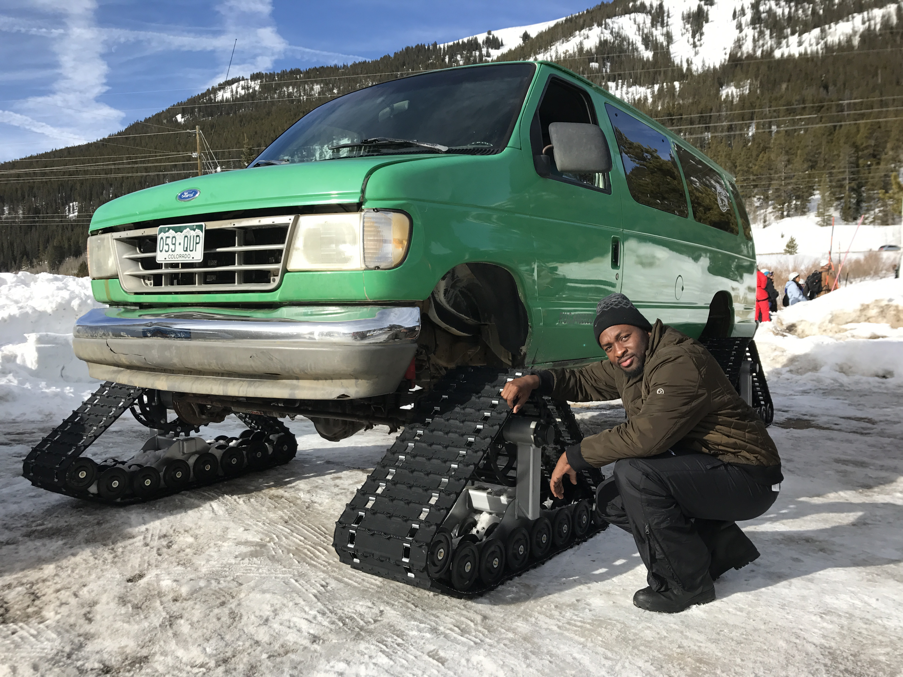
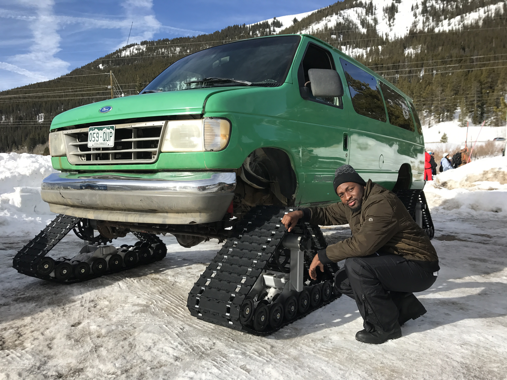

Lynchburg, TN
If you are even slightly interested in bourbon, whiskey, or any type of hard liquor, you owe yourself a visit to the Jack Daniels Distillery in Lynchburg, VA. Rich with history and American flair, you will learn all about this iconic drink. Best of all, there are plenty of affordable tour options that cap off the trip with a tasty adult treat.
Keystone, CO
Keystone Resort, in Summit County, Colorado is a fun-filled, mountain playground for adults and children alike. There are a plethora of activities to choose from all year round, such as skiing and snowboarding in the winter and biking and golfing in the summer.
 

Gatlinburg, TN
Nestled in the great Smokey Mountains, Laurel Falls is a beautiful 80 foot high water fall along Mt. Laurel. A trail stretches roughly 2.5 miles and is moderately difficult. There are plenty of safety reminders in place and personnel to guide you during your trip. .
© 2020 Jerry Louis